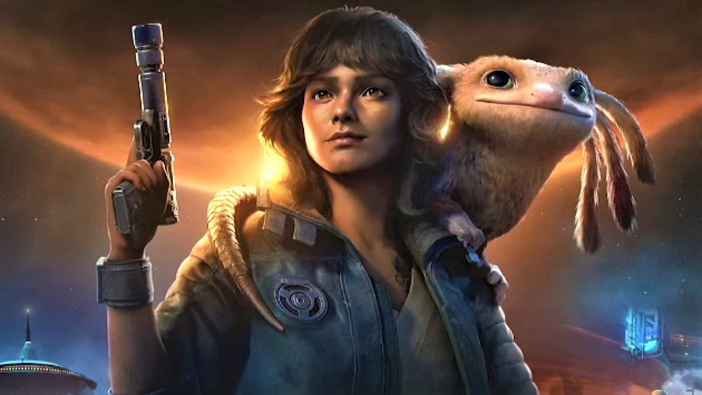

🌌 Une aventure dans la galaxie
Bref,pour revenir sur cette fameuse histoire, c'est l'histoire d'une jeune voleuse dénommé Kay Vess avec sa petite créature du nom de Nix qui essaient de gagner leur vie ensemble en acceptant différents contrats criminelles . Pour cela,ils vont monter une équipe pour réussir un énorme casse.Ils seront aidé d'un ancien droïde de combat de l'ancienne alience séparatiste du nom de N D 5. Tout cela pour gagner de l'argent.Voila un peu près pour l'histoire de ce jeu.Le gameplay n'est pas très agréable car il n'y a que de l'infiltration,de plus,nous voyons très clairement de quoi tous ces éléments sont repris:les phases de plateforme sont repris d'Uncharted et la montée d'adrénaline est tiré de red redemption. Le gameplay reste très basique et date tout de même beaucoup. L'histoire est correct malgré une fin un peu décevante. Le jeu possède plusieurs planètes, il y a en tous 5 planètes. Leur taille sont respectables malgré qu'on a l'impression que le monde est plat. On peut faire le tour d'une planète en 6 minutes environ.

✨ Points positifs
- Un monde ouvert riche et dynamique dans l’univers Star Wars
- Exploration spatiale et terrestre libre
- Les combats dans l'espace avec le trailblazer
- Une musique a coupé le souffle
❌ Points négatifs
- Les mauvaises expressions faciales.
- Le gameplay beaucoup trop simple et qui commence à dater.
- Les mondes trop plats.
- Missions trop répétitives avec beaucoup trop de discrétion.
🎮 Notre avis
Star Outlaws n'est pas le jeu que l'on attendait. Néanmoins le jeu a tout de même une histoire et un gameplay respectable malgré notre déception mais attention ce n'est pas non plus un très mauvais jeu car il y a eu tout de même des animations inoubliables comme celle avec Dark Vador le personnage le plus emblématique de Star Wars toujours charismatique.
✍️ Notre note
🌟🌟½☆☆☆